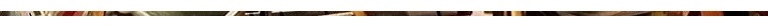

2023 Quarter Peals

Saturday, 16 December 2023
Boston, St Botolph
1280 Plain Bob Major in 51m (21-1-10 in Eb)
- Sylvia M Bird
- Mia Bradford
- Peter S Abbott
- Ruth Smith
- Alan D H Bird
- Graham Colborne
- Keith C Butter
- Greg Harrison (C)
First inside and first on 8 for Mia Bradford.
Rung for the 250th anniversary of the Boston Tea Party.
Saturday, 2 December 2023
St Botolph, Boston
1260 Plain Bob Triples in 53m (21-1-10 in Eb)
- Sylvia M Bird
- Joanne French
- Caitlin A Meyer
- Keith C Butter
- Alan D H Bird
- Michael Belcher
- Greg Harrison (C)
- David I Braunton
Rung following the joint Lincoln Guild Eastern/Central branch and Guild 10 bell practice in memory of Michael Reynolds of Swineshead who passed away on 1st December 2023. The practice and the quarter peal were rung half muffled.
The band wish to associate this quarter peal with all of those who attended the practice and also those who knew Michael through ringing who couldn’t make it today.
Tuesday, 31 October 2023
Alford, St Wilfrid
1260 Plain Bob Doubles in 40m (12-1-24 in F#)
- Alison M Shimmens
- Valerie S Wild
- Andrew Douglas
- Richard D Willoughby
- Caitlin A Meyer (C)
- Philip W Ford
1st Quarter peal for over 40 years - 1
To welcome Alison back to ringing after a break of over 40 years.
Rung for LDGCBR Eastern Branch Quarter Peal Month and to entertain the trick or treaters.
Monday, 30 October 2023
Coningsby, St Michael and All Angels
1340 Plain Bob Doubles in 45m (10-1-3 in G)
- Sue Stevenson
- Colin Simpson
- Tess Rowland
- Don Hare
- Greg Harrison (C)
- Candy Stone
First quarter treble.
First quarter tenor.
Participating in LDGCBR Eastern Branch 1/4 peal month.
Sunday, 29 October 2023
Alford, St Wilfrid
1260 Plain Bob Doubles in 43m (12-1-24 in F#)
- Helen M Brotherton
- Sally J Sivil
- Andrew Douglas
- Richard D Willoughby
- Caitlin A Meyer (C)
- Philip W Ford
For LDGCBR Eastern Branch Quarter Peal Month.
.
Old Bolingbroke, St Peter and St Paul
1260 Plain Bob Doubles in 42m (12-2-23 in F#)
- Josie Trewin
- Tess Rowland
- Colin Simpson
- Isabel Barker
- Tony Barker (C)
- Louise Bullen
First Quarter for tenor (6). Participating in LDGCBR Eastern Branch 1/4 peal month.
Friday, 27 October 2023
Wigtoft, St Peter and St Paul
1320 Ipswich Surprise Minor in 44m (7-2-17 in A#)
- Valerie S Wild
- Luke Tobin
- Joanne French
- Brian E Plummer
- Paul R Barker
- Anthony D Walker (C)
First in method-4
Wednesday, 25 October 2023
Freiston, St James
1272 Norwich Surprise Minor in 45m (14-1-4 in E)
- Robert J Ingamells
- Isabel Barker
- Joanne French
- Michael Belcher (C)
- Tony W Barker
- Greg Harrison
For the refurbishment of the church clock dial - sponsored by Freiston Parish council to celebrate the coronation of King Charles III
Sunday, 22 October 2023,
Butterwick,St Andrew
1260 Plain Bob Minor in 44m (9-3-12 in G)
- Christine Higginson
- Caroline E Beach
- Sam W Napper
- David Reynolds
- Joanne French (C)
- Greg Harrison
Rung by the local band before the Rev David Kendrew’s final service before his retirement
Saturday, 21 October 2023
Alford, St Wilfrid
1296 Cambridge Surprise Minor in 45m (12-1-24 in F#)
- Robert J Ingamells
- Sylvia Bird
- Ian D H Bird
- Greg Harrison
- Keith C Butter
- Graham Colborne (C)
Rung prior to Eastern Branch annual Race Night
also as part of Eastern Branch quarter peal month
Sutterton, St Mary the Blessed Virgin
1260 Mixed Doubles (2m) in 44m (12-1-19 in F)
540 Grandsire 720 Plain bob
- David Reynolds
- Brian Plummer
- Valerie S Wild
- Joanne French
- Greg Harrison (C)
- Philip Walters
First quarter at first attempt- 6 . Well struck Phil!!
Wishing Penny Fountain a speedy recovery
Tuesday, 17 October 2023
Butterwick, St Andrew
1296 Plain Bob Minor in 44m (9-3-12 in G)
- Caroline E Beach
- Robert J Ingamells
- Joanne French
- Michael Belcher (C)
- Michael W Slater
- Greg Harrison
First quarter peal of Plain bob minor inside away from observation - 2
Well done Robert!
Tuesday, 10 October 2023
Butterwick, St Andrew
1260 Plain Bob Doubles in 44m (9-3-12 in G)
- Kath Hooper
- Ruth Smith
- Joanne French
- David Reynolds
- Greg Harrison (C)
- Robert J Ingamells
First quarter - 1
Well done Kath!
Thursday, 5 October 2023
Sutterton, St Mary the Blessed Virgin
1250 Cambridge Surprise Major in 48m (12-1-19 in F)
- Valerie S Wild
- Ruth Smith
- Sylvia M Bird
- Anthony D Walker
- Robert Simpson
- Joanne French
- Alan D H Bird
- Greg Harrison (C)
First surprise major for over 20 years - 2 and 5
To wish Charles Robertson, vicar of Sutterton, Wigtoft, Swineshead, Bicker and Donington a happy retirement and to thank him for his support for ringing in these churches.
Also for Eastern branch quarter peal and ringing opportunities month
Thursday, 14 September 2023
Wigtoft, St Peter and St Paul
5040 Treble Dodging Minor (7m) in 2h 46 (7-2-17 in A#)
Primrose S, Norwich, Surfleet, Bourne, Cambridge, Oxford TB, Kent.
- Martin F Mitchell
- Derek J Tysoe
- Melanie R Newman
- Graham J N Colborne
- Philip R Grover
- Christopher P Turner (C)
750th peal - 4.
Sunday, 27 August 2023
Alford, St Wilfrid
1380 Doubles (2m) in 49m (12-1-24 in F#)
1320 Grandsire, 60 Stedman
- Alan D H Bird (C)
- Sylvia M Bird
- Caitlin A Meyer
- Richard D Willoughby
- Benjamin Rothwell
- Andrew Douglas
Specially arranged and rung for significant birthdays of Alford team members Richard Willoughby (80), Jan Clark, Phil Ford and Paul Solari
Swineshead, St Mary
1260 Mixed Doubles (5m) in 43m (9-1-19 in A)
2 extents of Reverse Canterbury, 2 extents of Gransire, 2 extents St Simons, 2 extents of St Martins and 2.5 extents of Plain Bob.
- Rebecca M J Carr
- Michael Reynolds
- Alan D H Bird
- Sylvia M Bird
- Greg Harrison (C)
- David Reynolds
Rung to celebrate the Christening of Jacob. Son of Michael Reynolds and Grandson of David Reynolds
Sunday, 20 August 2023
Boston, St Botolph
1296 Hunslet Bob Caters in 53m (21-1-10 in Eb)
- Sylvia M Bird
- Joanne French
- Alan D H Bird
- Michael Belcher
- Ian Dawson
- Anthony D Walker
- Keith Butter
- Luke Tobin
- Greg Harrison (C)
- George Pickwell
Rung in memory of Tom Freeston who died on 6th June 2023 by members of the Boston area group.
First in method for 4,5,7 and 8.
Saturday, 15 July 2023
Wrangle, St Mary the Virgin and St Nicholas
1260 Plain Bob Minor in 40m (9-3-23 in G)
- Tess Rowland
- Isabel Barker
- Caitlin A Meyer
- Joanne French
- James A Barker
- Tony W Barker (C)
Rung in loving memory of Tom Freeston by members of the Eastern branch of the Lincoln Diocesan Guild.Tom was a former branch president. In the past he supported Wrangle practices.
1, 3, 4 and 6 are current branch officers.
Saturday, 8 July 2023
Fishtoft, St Guthlac
1260 Doubles (2m) in 44m (12-2-9 in F#)
Grandsire and Plain Bob
- Yvonne I SmithV
- Sam W Napper
- Valerie S Wild
- Joanne French
- Michael J Smith (C)
- David Reynolds
In loving memory of Thomas J Freeston of Boston, ahead of his funeral to be held next week
Tom was a regular Sunday service ringer in this tower for many years.
Friday, 16 June 2023
Wigtoft, St Peter and St Paul
1272 Spliced Surprise Minor (3m) in 45m (7-2-17 in A#)
720 & 552, both Allendale, Westminster, Fryerning
- Valerie S Wild
- Michael Maughan
- Anthony D Walker
- Jo French
- Paul R Barker
- Barry Jones (C)
Rung in loving memory of Tom Freeston, former tower captain of Boston Stump for many years, also President of the Lincoln Diocesan Guild Eastern Branch and friend to all. RIP
Sunday, 28 May 2023
Coningsby, St Michael and All Angels
1260 Plain Bob Doubles in 42m (10-1-3 in G)
- Josie Trewin
- Isabel Barker
- Tess Rowland
- Colin Simpson
- Tony Barker (C)
- Chloe Powell
Rung on the day of the last service of Rev Sue Allison, who has been with the Bain Valley Churches Group for 8 years and wishing her a long and happy retirement.
First quarter for both treble and tenor ringers - well done and congratulations.
Tuesday, 23 May 2023
Alford, St Wilfrid
1260 Grandsire Doubles in 40m (12-1-24 in F#)
- Sally J Sivil
- Helen M Brotherton
- Caitlin A Meyer
- Richard D Willoughby
- Benjamin J Meyer (C)
- Daniel T Meyer
Rung in celebration for the life of Jennifer Vear following her funeral today. Wife of Edward Vear, Tower Captain.
Jennifer was a long standing member of the band and was enjoying learning to ring Grandsire prior to stopping ringing due to ill health.
Thursday, 18 May 2023
Frampton, St Mary
5040 Surprise Minor (9m) in 2h 59 (12-2-26 in F#)
(1) London; (2) Primrose; (3) Westminster, Allendale; (4) Beverley, Surfleet; (5) Bourne; (6) Norwich; (7) Cambridge.
- Lewis D Benfield
- Ruth Curtis
- Martin F Mitchell
- Paul F Curtis
- Robert J Crocker
- Peter G C Ellis (C)
Friday, 5 May 2023
Freiston, St James
1260 Doubles (7m) in 49m (14-1-4 in E)
Comprising 1 extent Reverse Canterbury, 2 extents of St. Simon, St. Martin, St. Osmund, Eynesbury 1 extent Grandsire, 60 Plain Bob
- Robert J Ingamells
- Valerie S Wild
- Joanne French
- Anthony D Walker
- P Barry Jones (C)
- Simon Pearson
In celebration of the forthcoming Coronation of King Charles III
Friday, 28 April 2023
Sutterton, St Mary the Blessed Virgin
1344 Hunslet Bob Triples in 51m (12-1-19 in F)
- Anthony D Walker
- Sylvia M Bird
- Alan D H Bird
- Robert Simpson
- Michael W Slater
- Brian Plummer
- Greg Harrison (C)
- Joanne French
First blows in method 4;5;6
For the flower festival
Sunday, 16 April 2023
Alford, St Wilfrid
1260 Plain Bob Minor in 42m (12-1-24 in F#)
- Caitlin A Meyer
- Isabel Barker
- Charles Macrorie
- Richard Willoughby
- James A Barker
- Tony W Barker (C)
Congratulating Hannah and George Watts on the birth of their son James William Watts. Hannah learnt to ring here at Alford.
Saturday, 15 April 2023
Alford, St Wilfrid
1260 Plain Bob Doubles in 44m (12-1-24 in F#)
- Jill Day
- Sally J Sivil
- Andrew Douglas
- Benjamin Rothwell
- Caitlin A Meyer (C)
- Philip W Ford
Congratulation to Hannah and George Watts on the birth of their son James William Watts. Rung by local ringers Hannah learnt to ring with at Alford.
Friday, 24 March 2023
Freiston, St James
1260 Single Oxford Bob Minor in 47m (14-1-4 in E)
- Anthony D Walker
- Valerie S Wild
- Joanne French
- Mark Mumby
- Michael Maughan (C)
- Luke Tobin<
In celebration of the life of Wendy Sharpe, Jo's aunt, whose funeral was held today at St Helena's, Leverton.
Friday, 3 February 2023
Wigtoft, St Peter and St Paul
1272 Ipswich Surprise Minor in 43m (7-2-17 in A#)
- Valerie S Wild
- Anthony D Walker
- Greg Harrison
- Joanne French
- Luke Tobin
- Barry Jones (C)
Rung for Candlemas
Friday, 13 January 2023
Sutterton, St Mary the Blessed Virgin
1260 Stedman Triples in 46m (12-1-19 in F)
- Valerie S Wild
- P Barry Jones
- Luke Tobin
- Anthony D Walker
- Paul R Barker
- Greg Harrison
- Michael Maughan (C)
- Brian E Plummer
Rung in memory of Ian D G B Ansell, former Tower Captain at Sutterton who passed away one year ago tomorrow. A great friend, trusted teacher and valued ringer.
We wish to associate Jo French with this Quarter Peal, who was due to take part in the ringing.
First of Stedman - 3